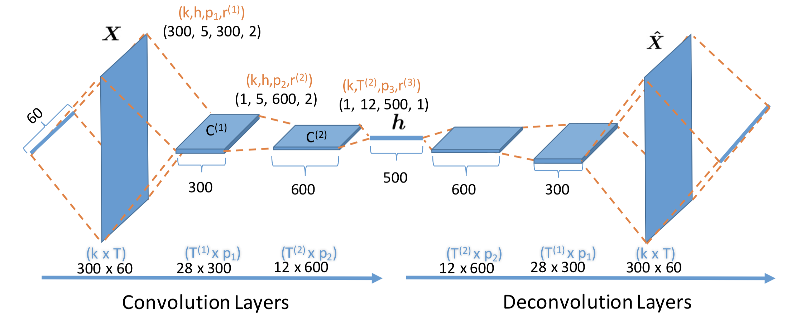

Paragraph Generation (番外)
当时整个过程的研究思路。
目录
- 关于feature
- 关于attention丧心病狂的尝试
- Convolutional sentence topics
- 为了使用来卷积的feature对region排序不敏感
- 优化feature（算是）
- 强化学习
关于feature
来自不同的方法
-
baseline feature
MSDN (Relation-based networks)
效果不好
Bottom-up attention (faster-rcnn))
结合attention model效果很好
base不同的model
用的bottom-up attention model
Resnet101
效果那是极好的
VGG16
用在COCO上时效果要差一些，甚至和DenseCap (VGG16-based) feature效果差不多。幸好用在paragraph数据集上相比DenseCap feature居然会有提升，不然就gg了。
关于attention丧心病狂的尝试
paragraph-level attention
在保留bottom-up attention双层结构的基础上多加一个paragraph lstm来构成双层attention的结构。由paragraph lstm产生一个topic vector作为sentence lstm的input。
然而试了个把月，试过各种组合都没有提升，有很多甚至会降performance。考虑三层lstm的结构太heavy了对模型的学习没有益处，另外paragraph lstm也很难真正attend并学出topic之类的。
diverse and coverage of attention
pandy师兄的idea，认为attention一方面应该diverse，另外所有attention应该互补，能cover到图上所有内容。
diverse参考Attention-based Ensemble for Deep Metric Learning
coverage参考On the Automatic Generation of Medical Imaging Reports
不过用在我们的实验当中没什么作用。
Convolutional sentence topics
Inspired by：
Temporal Generative Adversarial Nets With Singular Value Clipping
做video生成，用的是反卷积。两个generator，一个根据a single latent variable生成一系列vectors，另一个根据这些vectors生成一系列图片，对应于video中的一帧一帧。
Deconvolutional Paragraph Representation

将句子中的词embedding拼起来成为一个feature map，经过一系列卷积变成一个vector，再经过反卷积重构回去。（主要根据这篇）
为了使用来卷积的feature对region排序不敏感
Nonlocal
原版Non-local Neural Networks用过来比较耗显存，而且也一直没调收敛；
后来有一个轻量版的Efficient Coarse-to-Fine Non-Local Module for the Detection of Small Objects，占显存小很多，然鹅用过来没什么用。
3D points
因为3D点云也面临如何arrange那些点的问题（点类比我们问题中的region，也需要考虑排序之类的），所以有参考几篇paper，不过也没有成功。List：
A Graph-CNN for 3D Point Cloud Classification
PointNet: Deep Learning on Point Sets for 3D Classification and Segmentation
优化feature（算是）
Residual Block
Deep Residual Learning for Image Recognition
Squeeze and Excitation
Squeeze-and-Excitation Networks
也没有明显效果。
强化学习
Coverage Reward
这个没有paper原型，貌似是大师兄用在paper里的，不知道和我后来的做法是否一样。理解起来还是很直观的，让生成的名词和ground truth里的名词更加match。依然是手挑的vocabulary，先用Stanfordparser（大概是）做了词性分析，然后挑了top1k。
CIDEr
很稳定地会涨CIDEr和BLEU，但METEOR不涨。最开始实验的时候用了以前写的teacher forcing，导致一直抖动涨得不明显，后拉发现了去了就好了。
METEOR
直接优化METEOR倒是会涨一些，可以超过state-of-the-art，但是其他两个指标会降。把METEOR和CIDEr一起用的时候，调权重就好像以前在家洗澡时调热水，一个不小心METEOR就挂了，一个不小心CIDEr就挂了。而且总的来说METEOR也不会涨很多，所以最后没有用这个指标来更新。
用Discriminator提供的reward
走投无路的时候也试过，单句和段落的指标都试过，结果是类似的，CIDEr会涨，但METEOR不涨。换不同的数据集的话还是有尝试的意义，毕竟从前做storytelling的时候用discriminator会让METEOR涨得很明显，只是时间长了句子也会变长，所以后来有同时用teacher forcing。但teacher forcing也见仁见智吧。